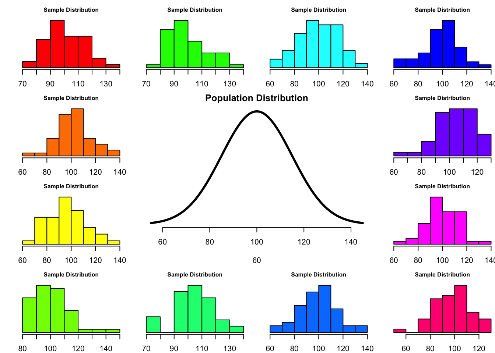
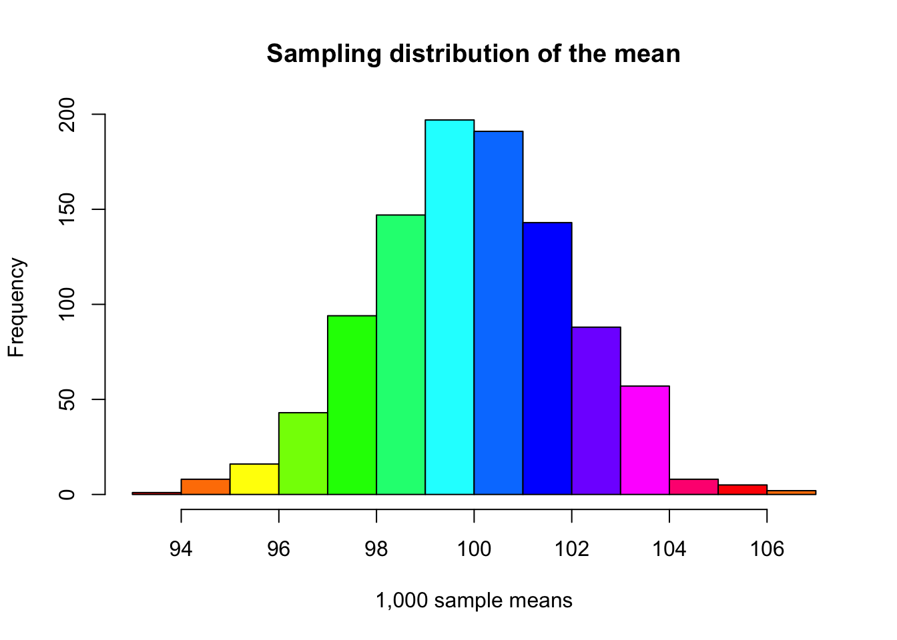
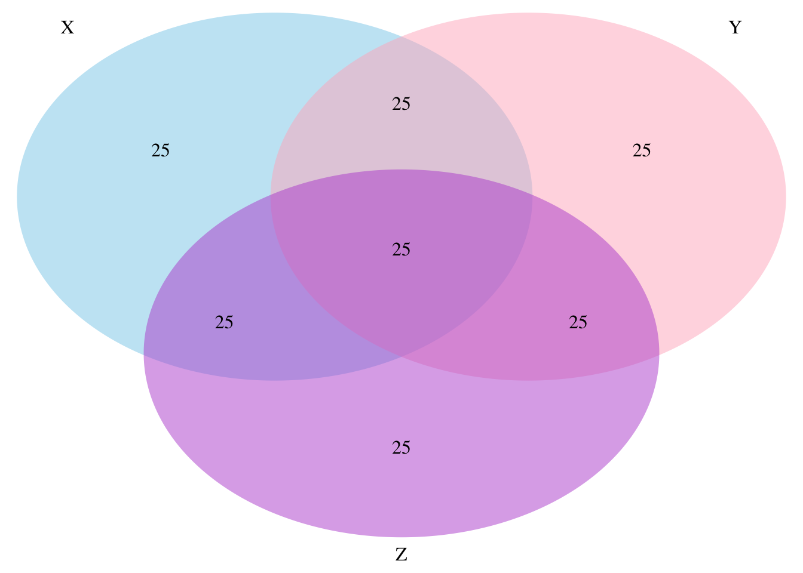
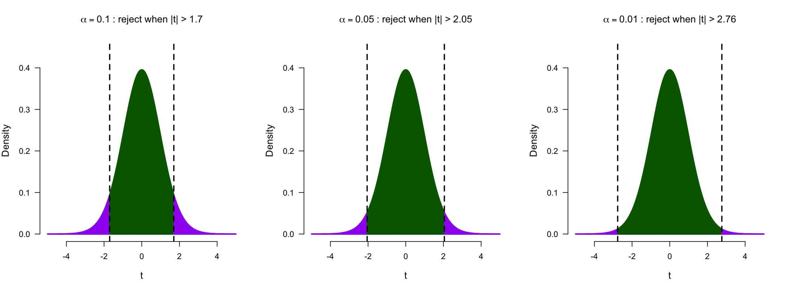
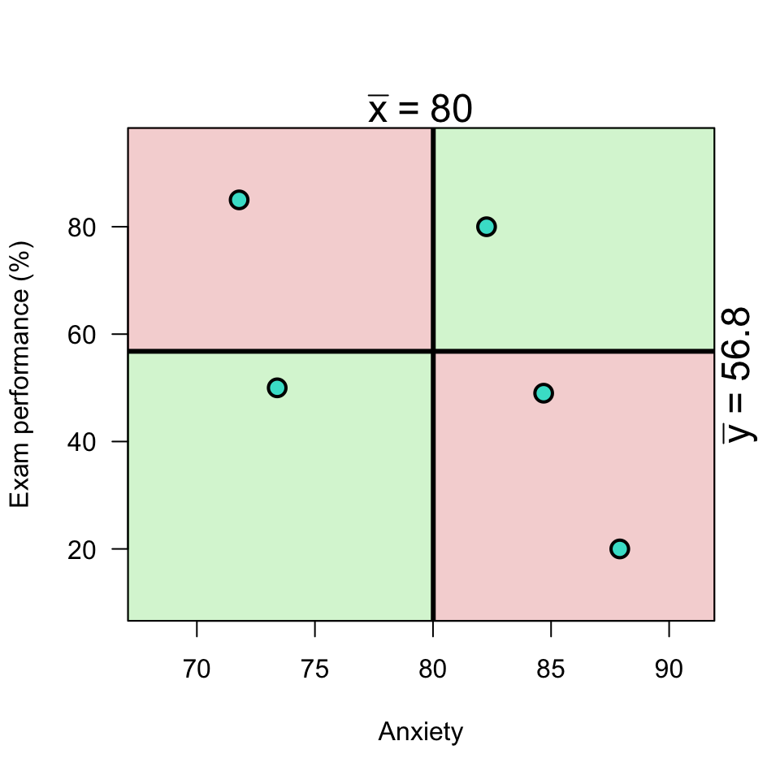
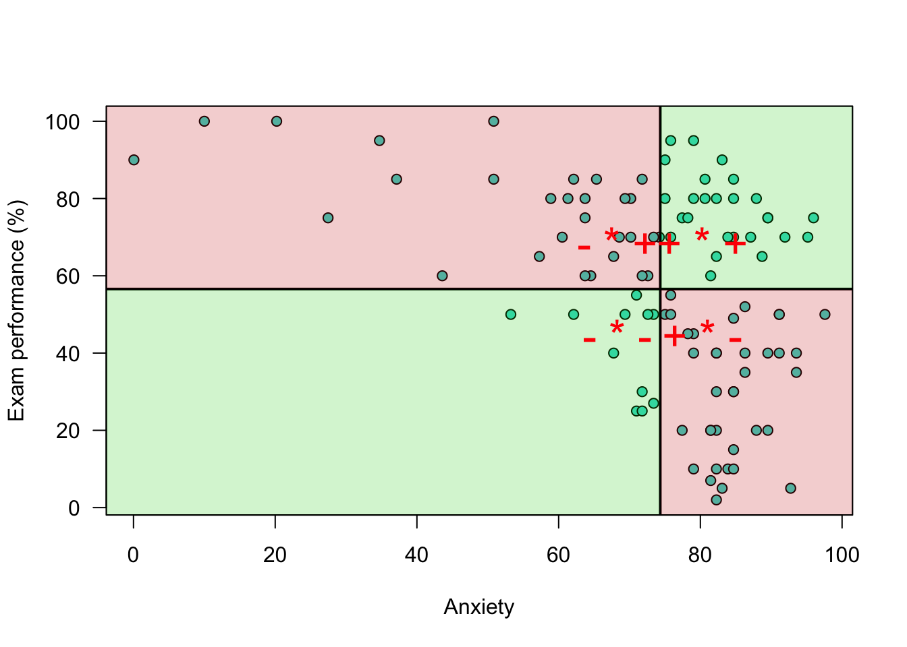
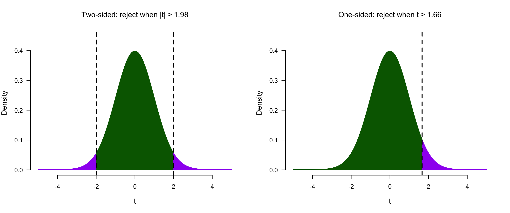
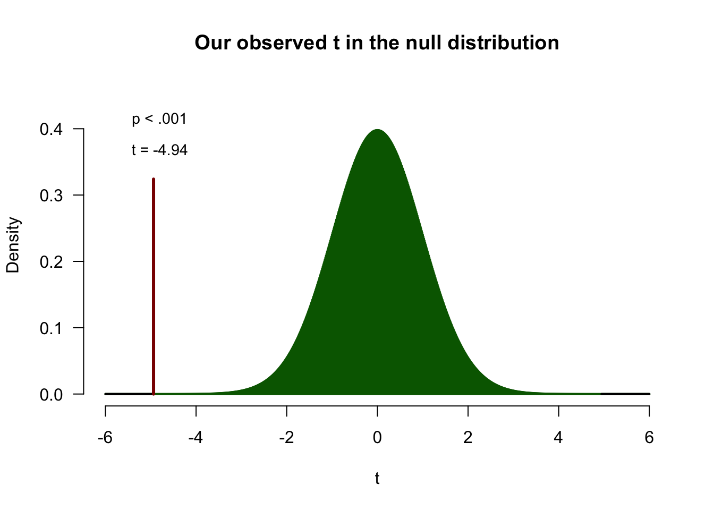
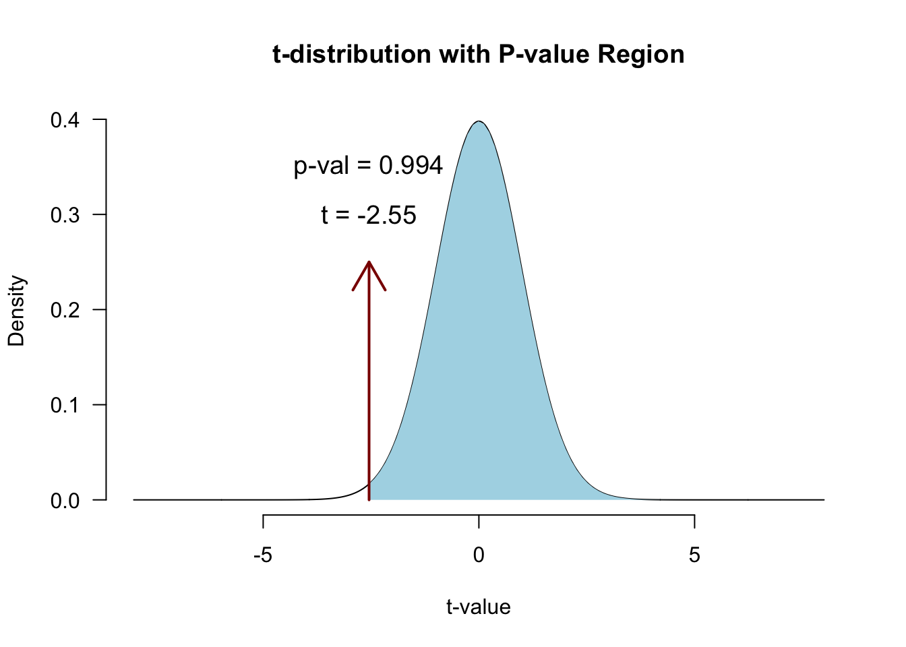

6. Correlation
In this lecture we discuss:
- The t-distribution
- Sampling distributions, continued
- Standard error and confidence intervals
- Correlation
- From variance to covariance to \(r\)
- In JASP
- Significance of a correlation
- Converting \(r\) to a \(t\)-statistic
- Control for a third variable
- Partial correlation
Reading: Chapter 7 (§7.1–7.8), 5.7 (Scatterplots), 2.8–2.9 (Standard error & confidence intervals)
Not exam material: §7.2.5, §7.4.3–7.4.5 (Spearman, Kendall, point-biserial), §7.6 (comparing correlations).
Challenger
The statistics
cor.test(damagedTemp, damagedOr)$p.value[1] 0.1731224cor.test(temperature, damage)$p.value[1] 0.001043532| \(r\) | \(p\) | |
|---|---|---|
| 7 damaged flights | -0.58 | .173 |
| All 23 flights | -0.64 | .001 |
Data: challenger.csv, from the Presidential Commission on the Space Shuttle Challenger Accident (1986, Vol. 1: 129-131), via Dalal, Fowlkes & Hoadley (1989).
T-distribution
Three distributions
What is the difference between
- Population distribution
- Sample distribution
- Sampling distribution
Gosset

In probability and statistics, Student’s t-distribution (or simply the t-distribution) is any member of a family of continuous probability distributions that arises when estimating the mean of a normally distributed population in situations where the sample size is small and population standard deviation is unknown.
In the English-language literature it takes its name from William Sealy Gosset’s 1908 paper in Biometrika under the pseudonym “Student”. Gosset worked at the Guinness Brewery in Dublin, Ireland, and was interested in the problems of small samples, for example the chemical properties of barley where sample sizes might be as low as 3.
Source: Wikipedia
Population distribution
set.seed(123)
layout(matrix(c(2:6,1,1,7:8,1,1,9:13), 4, 4))
n <- 50 # Sample size
df <- n - 1 # Degrees of freedom
mu <- 100
sigma <- 15
IQ <- seq(mu-45, mu+45, 1)
par(mar=c(4,2,2,0))
plot(IQ, dnorm(IQ, mean = mu, sd = sigma), type='l', col="black", main = "Population Distribution",
lwd = 3, bty= "n", axes = FALSE, xlab = c(60, 140))
axis(1)
n.samples <- 12
for(i in 1:n.samples) {
par(mar=c(2,2,2,0))
hist(rnorm(n, mu, sigma), main="Sample Distribution", xlab = c(60, 140),
cex.axis=.5, col=rainbow(12)[i], cex.main = .75, las = 1, axes = FALSE)
axis(1)
}
A sample
Let’s take one sample from our normal population.
x <- rnorm(n, mu, sigma); x [1] 116.11018 99.58980 99.50004 77.25899 111.85578 96.83899 90.14886
[8] 78.81961 95.50356 87.26408 94.04454 81.73600 125.31384 99.75996
[15] 116.12418 60.97450 93.20203 89.86777 81.65611 123.19914 78.77077
[22] 104.77585 112.69654 102.67285 86.87117 114.11749 102.55882 84.04753
[29] 79.17926 131.30076 89.82245 72.16643 107.99889 104.65345 79.69248
[36] 70.85565 98.25546 117.09094 109.54186 92.60594 87.48718 104.06600
[43] 102.36030 109.44568 94.06303 113.49031 87.53783 95.04183 111.11222
[50] 114.84957hist(x, main = "Sample distribution", col = rainbow(12)[6], breaks = 15, las =1)
text(125, 7, bquote(bar(x) ~ " = " ~ .(round(mean(x),2))), cex = 2)
More samples
More samples, keeping \(\bar{x}\) each time.
n.samples <- 1000
mean.x.values <- vector()
for(i in 1:n.samples) {
x <- rnorm(n, mu, sigma)
mean.x.values[i] <- mean(x)
}Sampling distribution
The means have their own distribution.
hist(mean.x.values,
col = rainbow(12),
main = "Sampling distribution of the mean",
xlab = "1,000 sample means")
Standard Error and
Confidence Intervals
That spread has a name.
Standard Error
95% confidence interval
\[SE = \frac{\text{Standard deviation}}{\text{Square root of sample size}} = \frac{s}{\sqrt{n}}\]
- Lowerbound = \(\bar{x} - 1.96 \times SE\)
- Upperbound = \(\bar{x} + 1.96 \times SE\)
Standard Error

T-distribution
So if the population is normaly distributed (assumption of normality) the t-distribution represents the deviation of sample means from the population mean (\(\mu\)), given a certain sample size (\(df = n - 1\)).
The t-distibution therefore is different for different sample sizes and converges to a standard normal distribution if sample size is large enough.
The t-distribution is defined by:
\[\textstyle\frac{\Gamma \left(\frac{\nu+1}{2} \right)} {\sqrt{\nu\pi}\,\Gamma \left(\frac{\nu}{2} \right)} \left(1+\frac{x^2}{\nu} \right)^{-\frac{\nu+1}{2}}\!\]
where \(\nu\) is the number of degrees of freedom and \(\Gamma\) is the gamma function.
Source: wikipedia
The t-distribution family

Fatter tails for small \(n\) (few degrees of freedom); converges to the standard normal as \(n\) grows.
\(\alpha\) dictates the rejection region

Same logic as the binomial, now continuous: stricter \(\alpha\), region further into the tails.
Applet: a continuous sampling distribution
The same reasoning as the binomial applet, now for a continuous outcome.
Play around with this app to see how the t-distribution, \(\alpha\), and power hang together
Power in practice
- Strive for 80%
- Based on known effect size
- Calculate number of subjects needed
- Use JASP (Power module), G*Power, or SPSS to calculate

Alpha Power
Correlation
Pearson Correlation

In statistics, the Pearson correlation coefficient, also referred to as the Pearson’s r, Pearson product-moment correlation coefficient (PPMCC) or bivariate correlation, is a measure of the linear correlation between two variables X and Y. It has a value between +1 and −1, where 1 is total positive linear correlation, 0 is no linear correlation, and −1 is total negative linear correlation. It is widely used in the sciences. It was developed by Karl Pearson from a related idea introduced by Francis Galton in the 1880s.
Source: Wikipedia
Pearson Correlation
\[r_{xy} = \frac{{COV}_{xy}}{S_xS_y}\] Where \(S\) is the standard deviation and \(COV\) is the covariance.
\[{COV}_{xy} = \frac{\sum_{i=1}^N (x_i - \bar{x})(y_i - \bar{y})}{N-1}\]
Plot correlation

Plot correlation

Plot correlation

\[(x_i - \bar{x})(y_i - \bar{y})\]
Load data
data <- read.csv(datasetsPath("2026/exam-anxiety.csv"), check.names = FALSE)
data <- data[, c("Time spent revising", "Exam performance", "Exam anxiety")]
ssrTable(data)Covariance
\[{COV}_{xy} = \frac{\sum_{i=1}^N (x_i - \bar{x})(y_i - \bar{y})}{N-1}\]
mean.exam <- mean(exam_grade, na.rm=TRUE)
mean.anxiety <- mean(anxiety, na.rm=TRUE)
delta.exam <- exam_grade - mean.exam
delta.anxiety <- anxiety - mean.anxiety
prod <- delta.exam * delta.anxiety
covariance <- sum(prod) / (N - 1)
covariance[1] -196.554Correlation
\[r_{xy} = \frac{{COV}_{xy}}{S_xS_y}\]
correlation <- covariance / ( sd(exam_grade) * sd(anxiety) ); correlation[1] -0.4409934Correlation
\[r_{xy} = \frac{{COV}_{xy}}{S_xS_y}\] \[{COV}_{xy} = \frac{\sum_{i=1}^N (x_i - \bar{x})(y_i - \bar{y})}{N-1}\]
cor(exam_grade, anxiety) # correlation[1] -0.4409934cor(z.exam, z.anxiety) # correlation of z-scores[1] -0.4409934# covariance of z-scores
sum(z.exam * z.anxiety ) / (N - 1)[1] -0.4409934Plot correlation

Significance testing using \(t\)
A test statistic with a known probability distribution (the t-distribution).
It’s a standardized measure of how closely our observed statistic matches the value claimed by \(H_0\):
\[t = \frac{\text{estimate} - H_0 \text{ value}}{\text{SE}(\text{estimate})}\]
Significance of a correlation
We convert \(r\) to a \(t\)-statistic because \(t\) has a sampling distribution: the \(t\)-distribution with df = N-2:
\[t_r = \frac{r \sqrt{N-2}}{\sqrt{1 - r^2}}\]
\[{df} = N - 2\]
Hypotheses for \(t\)
\[ \begin{aligned} H_0 &: t_r = 0 \\ H_A &: t_r \neq 0 \\ H_A &: t_r > 0 \\ H_A &: t_r < 0 \\ \end{aligned} \]
\(r\) to \(t\)
df <- N-2
t.r <- ( correlation*sqrt(df) ) / sqrt(1-correlation^2)
t.r[1] -4.938025df[1] 101One-sided vs two-sided
The hypotheses above translate into where we shade the rejection region:

Same \(\alpha\), split over two tails or spent on one.
Visualize
Locate in \(t\)-distribution

\[P(|t| \geq 4.94 \mid H_0) < .001\]
Partial correlation
A third variable
All three are related:
- Performance and anxiety: \(r = -0.44\)
- Performance and revision: \(r = 0.40\)
- Anxiety and revision: \(r = -0.71\)
How much of the association is unique to anxiety and performance?
Partial correlation
\[\LARGE{r_{xy \cdot z} = \frac{r_{xy} - r_{xz} r_{yz}}{\sqrt{(1 - r_{xz}^2)(1 - r_{yz}^2)}}}\]
Or do anxious students simply revise less?
cor.exam.anxiety <- cor(exam_grade, anxiety)
cor.exam.revise <- cor(exam_grade, revise)
cor.anxiety.revise <- cor(anxiety, revise)
data.frame(cor.exam.anxiety, cor.exam.revise, cor.anxiety.revise) cor.exam.anxiety cor.exam.revise cor.anxiety.revise
1 -0.4409934 0.3967207 -0.7092493numerator <- cor.exam.anxiety - (cor.exam.revise * cor.anxiety.revise)
denominator <- sqrt( (1-cor.exam.revise^2)*(1-cor.anxiety.revise^2) )
partial.correlation <- numerator / denominator
partial.correlation[1] -0.2466658Holding revision constant, the link shrinks.
Significance of partial correlation
Locate in t-distribution
df <- N - 3
t.pr <- ( partial.correlation*sqrt(df) ) / sqrt(1-partial.correlation^2)
t.pr[1] -2.545307p-value

JASP

Closing
Next Week
- The linear model
- Predictions
- Assumptions
- Fun
Recommended Exercises
- Exercise 7.1
- Note:
pets.jaspcan be downloaded from the JASP data library
- Note:
- Exercise 7.6
- Exercise 7.7
Contact